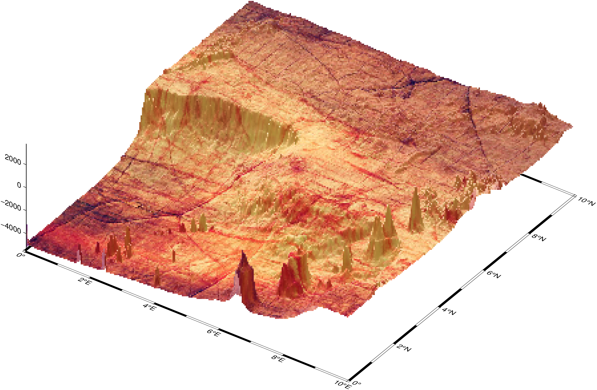
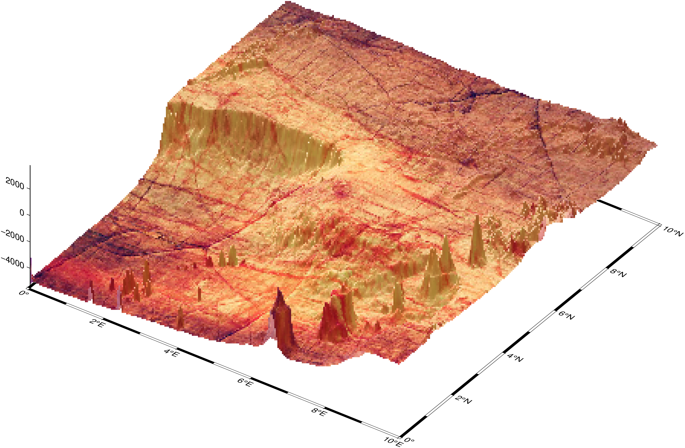

using GMT
G = grdcut("@earth_relief_01m", region=(0,10,0,10));
viz(G, shade="+nt0.5", proj=:merc, view=(145,35), drape="@wood_texture.jpg", zsize=5, surftype=(image=50,))
grdview(cmd0::String=""; kwargs...)Create 3-D perspective image or surface mesh from a grid
Reads a 2-D grid and produces a a 3-D perspective plot by drawing a mesh, painting a colored/grayshaded surface made up of polygons, or by scanline conversion of these polygons to a raster image. Options include draping a data set on top of a surface, plotting of contours on top of the surface, and apply artificial illumination based on intensities provided in a separate grid.
The region option can be used to select a map region larger or smaller than that implied by the extent of the grid.
J or proj or projection : – proj=
Select map projection. More at [proj](../common_opts/opt_J.html)
Jz or JZ or zscale or zsize : zscale=scale | zsize=size
Set z-axis scaling or or z-axis size. zsize=size sets the size to the fixed value size (for example zsize=10 or zsize=4i). zscale=scale sets the vertical scale to UNIT/z-unit.
B or axes or frame
Set map boundary frame and axes attributes. Default is to draw and annotate left, bottom and vertical axes and just draw left and top axes. More at [frame](../common_opts/opt_B.html)
C or color or cmap : – color=cpt
Where cpt is a GMTcpt type or a cpt file name. Alternatively, supply the name of a GMT color master dynamic CPT [turbo] to automatically determine a continuous CPT from the grid’s z-range; you may round up/down the z-range by adding +i zinc. Yet another option is to specify color="color1,color2[,color3 ,...]" or color=((r1,g1,b1),(r2,g2,b2),...) to build a linear continuous CPT from those colors automatically (see [Setting color]). When not explicitly set, but a color map is needed, we will either use the current color map, if available (set by a previous call to makecpt), or the default turbo color map. Must be present if you want (1) mesh plot with contours (surftype=(mesh=true,)), or (2) shaded/colored perspective image (surftype=(surface=true,) or surftype=(img=true,)). For surftype=(surface=true,) you can specify that you want to skip a z-slice by setting the red r/g/b component to -.
G or drape : – drape=grid | drape=(grid_r, grid_g, grid_b) | drape=image
Drape the image in drapegrid on top of the relief provided by reliefgrid. [Default determines colors from reliefgrid]. Note that zsize and plane always refers to the reliefgrid. The drapegrid only provides the information pertaining to colors, which (if drape is a grid) will be looked-up via the CPT (see color). Instead, you may give three grid files via separate drape options in the specified order. These files must contain the red, green, and blue colors directly (in 0-255 range) and no CPT is needed. The drapegrid may be of a different resolution than the reliefgrid. Finally, drapegrid may be an image to be draped over the surface, in which case the color option is not required. For the drape image case it is important that both reliefgrid and drapeimage carry referencing information. In that case, the reliefgrid can be in geograpgic coordinates and drapeimage in any projection system. Otherwise, we try to figure out what to do but things may ofc go wrong.
isgeog : – isgeog=true
When drapping an image that has a projection info, over a grid that is in geographics but does not carry any information about this fact we may need to use this option to help the program finding the common BoundingBox. Used only together with drape
clim : – clim=(z_min,z_max)
When doing an automatic colorization (i.e., when a colormap is not provided explicitly), limit the automatic color map to be computed between z_min,z_max. Grid values below z_min and above z_max will be painted with the same color as those.
equalize : – equalize=true | equalize=ncolors
With automatic colorization, map data values to colors through the data’s cumulative distribution function (CDF), so that the colors are histogram equalized. Default (with equalize=true) chooses arbitrary values by a crazy scheme based on equidistant values for a Gaussian CDF. Use equalize=ncolors to specify the desire number of colors.
percent : – percent=pct
Exclude the two tails of the distribution (in percentage). Grid values are sorted and we exclude data in 0.5pct and 100 - 0.5pct from the automatic colormap determination. This option is specially useful when the grid has outliers.
I or shade or intensity : – shade=grid | shade=azim | shade=(azimuth=az, norm=params, auto=true)
Gives the name of a grid with intensities in the (-1,+1) range, or a constant intensity to apply everywhere (affects the ambient light). Alternatively, derive an intensity grid from the input data grid grd_z via a call to grdgradient; use shade=(azimuth=az,) or shade=(azimuth=az, norm=params) to specify azimuth and intensity arguments for that module or just give shade=(auto=true,) to select the default arguments (azim=-45,norm=:t1). If you want a more specific intensity scenario then run grdgradient separately first.
N or plane : – plane=lev | plane=(lev, fill)
Draws a plane at this z-level. If the optional color is provided via plane=(lev, fill), and the projection is not oblique, the frontal facade between the plane and the data perimeter is colored. See -Wf for setting the pen used for the outline.
Q or surf or surftype : – surftype=(mesh=true, waterfall=(:rows | :cols [,fill]), surface=true, image=true, nan_alpha=true, monochrome=true)
Select one of following settings. For any of these choices, you may force a monochrome image by setting monochrome=true. Colors are then converted to shades of gray using the (monochrome television) YIQ transformation. Note: pay attention to always use a tuple, even when only one option is used. This is correct: surf=(img=true,) but this is wrong: surf=(img=true)
Specify mesh=true for mesh plot [Default], and optionally set a color (see [Setting color]), with mesh=color, for a different mesh paint.
Specify waterfall=:rows or :cols for waterfall plots (row or column profiles). Specify fill color or patterns with a second argument. For example waterfall=(:rows, :red)
Specify surface=true for surface plot, and optionally add mesh=true to have mesh lines drawn on top of surface.
Specify image=true for image plot. Optionally use image=dpi to set the effective dpi resolution for the rasterization [100].
Specify nan\_alpha=true, same as image=true but will make nodes with z = NaN transparent, using the colormasking feature in PostScript Level 3.
R or region or limits : – limits=(xmin, xmax, ymin, ymax, zmin, zmax) | limits=(BB=(xmin, xmax, ymin, ymax, zmin, zmax),) | …more
Specify the region of interest. Default limits are computed from data extents. More at [limits](../common_opts/opt_R.html)
S or smooth : – smooth=smoothfactor
Used to resample the contour lines at roughly every (gridbox_size/smoothfactor) interval.
T or no_interp : – no_interp=(skip=true, outlines=true)
Plot image without any interpolation. This involves converting each node-centered bin into a polygon which is then painted separately. Use skip=true to skip nodes with z = NaN. This option is useful for categorical data where interpolating between values is meaningless. Optionally, add outlines=true to draw the tile outlines. If the default pen is not to your liking, use outlines=pen (see [Pen attributes]). As this option produces a flat surface it cannot be combined with -JZ or -Jz.
U or time_stamp : – time_stamp=true | time_stamp=(just=“code”, pos=(dx,dy), label=“label”, com=true)
Draw GMT time stamp logo on plot. More at [timestamp](../common_opts/opt_U.html)
V or verbose : – verbose=true | verbose=level
Select verbosity level. More at [verbose](../common_opts/opt_V.html)
W or pen or pens
pens=(contour=true,)
Draw contour lines on top of surface or mesh (not image). Use pens=(contour=true, pen) to set pen attributes used for the contours. [Default: width = 0.75p, color = black, style = solid].
pens=(mesh=true, pen)
Sets the pen attributes used for the mesh. [Default: width = 0.25p, color = black, style = solid]. You must also select surftype=(mesh=true,) or surftype=(surface=true, mesh=true) for meshlines to be drawn.
pens=(facade=true, pen)
Sets the pen attributes used for the facade. [Default: width = 0.25p, color = black, style = solid]. You must also select plane for the facade outline to be drawn.
X or xshift or x_offset : xshift=true | xshift=x-shift | xshift=(shift=x-shift, mov=“a|c|f|r”)
Shift plot origin. More at [xshift](../common_opts/opt_X.html)
Y or yshift or y_offset : yshift=true | yshift=y-shift | yshift=(shift=y-shift, mov=“a|c|f|r”)
Shift plot origin. More at [yshift](../common_opts/opt_Y.html)
n or interp or interpol : – interp=params
Select interpolation mode for grids. More at [interp](../common_opts/opt_n.html)
p or view or perspective : – view=(azim, elev)
Default is viewpoint from an azimuth of 200 and elevation of 30 degrees.
Specify the viewpoint in terms of azimuth and elevation. The azimuth is the horizontal rotation about the z-axis as measured in degrees from the positive y-axis. That is, from North. This option is not yet fully expanded. Current alternatives are:
bar3!) More at [perspective](../common_opts/opt_p.html)t or transparency or alpha: – alpha=50
Set PDF transparency level for an overlay, in (0-100] percent range. [Default is 0, i.e., opaque]. Works only for the PDF and PNG formats.
figname or savefig or name : – figname=name.png
Save the figure with the figname=name.ext where ext chooses the figure image format.
See the Example 04 at the Historical Collection gallery.
Make a low resolution image plot with texture draping. Use a dpi=50 to make it lighter to load the man page. The drape option is used to overlay an image texture (from a cork tree trunk) on the grid data from the Gulf of Guinea zone. (Note, the viz function calls grdview when it detects the view option)
using GMT
G = grdcut("@earth_relief_01m", region=(0,10,0,10));
viz(G, shade="+nt0.5", proj=:merc, view=(145,35), drape="@wood_texture.jpg", zsize=5, surftype=(image=50,))
This example imagines that a OVNI (UFO) ship is pointing a spot light with a radius of 100 km over Denver.
using GMT
G = grdcut("@earth_relief_30s", region=(-108,-103,35,40));
# Compute the distances to Denver (here we need to use the terse syntax)
Gr = grdmath("-R? -104.9903 39.7392 SDIST", G);
# Mask distances > 100 km
Ginside = Gr < 100;
# Compute gradients along two directions to use in shading.
Gint1 = grdgradient(G, azim=90, norm=(cauchy=true, amp=1));
Gint2 = grdgradient(G, azim=45, norm=(cauchy=true, amp=1));
# Combine the gradients
Gint = Gint2 * 0.5 + Gint1 + Ginside - 0.5;
# View the result
C = makecpt(range=(1000,4000));
grdview(G, shade=Gint, proj=:merc, zsize=1, view=(155,25), colormap=C, surftype=:image, show=true)